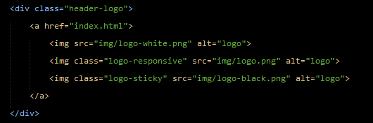

Hi Welcome to ZenGarden!
Zen Garden is Garden and Landscape HTML Template, it's focused for Garden and Landscape Company. ZenGarden Build using latest technology with clean and modern design. Zen Garden template used Bootstrap for flexibility, and developed with HTML5, CSS3 for modern web standard. You can modified this template, because Zen Garden have 3 Different homepage layout, 3 Header Variations and many feature that can be switcher with your feels and looks.
The Package
This Theme download package contains of 2 folder, the folder is "documentation" and "html". The main file of html file is under folder "html", and here the structure of file from of this theme.
JS Files
-
bootstrap.min.jsbootstrap js framework
-
config.jsAll setting of jquery used for this theme
-
contact-form.jsused for contact form
-
isotope.pkgd.min.jsused for filterlable on portfolio
-
jquery.countTo.jsused for numeric counter
-
jquery.easypiechart.jsused for circular bar
-
jquery.flexslider-min.jsused for slideshow
-
jquery.maps.jsused for google map plugin
-
jquery.min.jsjquery framework
-
jquery.parallax.jsused for parallax background
-
jquery.scrollUp.jsused for scroll to top
-
jquery.sscr.jsused for smoth scroll
-
jquery.sticky.jsused for sticky menu
-
jquery.waypoints.min.jsused for scroll event
-
modernizr.min.jsjvascript modernizr framework
-
owl.carousel.min.jsused for carousel
-
smartmenu.min.jsused for menu
-
tether.min.jsjavascript tether
CSS Files
-
animate.min.cssused for animate on some grid content
-
bootstrap.min.csscontain bootstrap css framework
-
flexslider.csscontain styling of slider
-
font-awesome.min.csscontain font awesome icon stylesheet
-
foundstrap.csscontain foundstrap css framework (additional framework)
-
iconcrafts.csscontain icon craft stylesheet
-
owl-carousel.csscontain owl carousel stylesheet
-
responsive.csscontain media queries stylesheet
-
smartmenu.min.csscontain smart menu stylesheet
-
style.csscontain stylesheet for this theme
HTML Structure
The layout in this theme is very flexible because this use "grid" system, so you can make any configuration of column (please refer the "column.html" for some sample of column). In this case I give example if you use 2 column, which one column is maincontent and one again is sidebar. All of the information within the maincontent area is nested within a div with an class of "col-md-8" and for sidebar is nested within an class of "col-md-4". Navigation menu is within a div with an class of "menu-container". The general template structure is the same throughout the template. Here is the general structure :
Site Structure
The page have five main blocks : header, pagetitle, content, and footer each block consisting of each element present in it.
Logo
We must add 3 variant logo, for default logo, sticky logo and for responsive logo, to edit the logo you can simply replace the "logo.png" for header logo file into the img folder, if you intend to use a png file. Default size for header logo is 206 x 40 pixel, I recommend to use 2x the size of a normal size, because it will look good on retina devices
Menu
Menu at this theme is use horizontal menu style, and it use "li" to make menu and use "li" under "li" if you want make dropdown menu. If you want make active some menu please use class="active" in active menu that you want.
Gallery Filter
To undestand how gallery filter work, first you must create each category on gallery filter list, on this example I will give name ".maintenance", ".decoration", and ".protection". If you look on HTML file this will like this.
Now you just need add a class of your "category" on each "li" of your gallery, see the image below
How to change Map location ?
At "contact.html" and "index.html" go to bottom on javascript area, you must set "latitude" point and "longitude" point. To know your position coordinates or latitude and longitude please visit : http://universimmedia.pagesperso-orange.fr/geo/loc.htm
Change latitude and longitude also don't forget change the latitude and longitude for marker icon with your value.
How to setting Contact Form ?
To setting contact form, please open file "sendmail.php" and change with your email on the line 21.
How to make a new Favicon ?
First you must make image on size 32x32 pixel, and save in png format, after that go to this site : http://tools.dynamicdrive.com/favicon/ and create your "favicon.ico" there and replace the old "favicon.ico" in image folder with your new favicon.ico

How to update
from 1.0 to 1.0.1
replace style.css and responsive.css to newest version
if you use testimonials, please add strong tag inside cite to fix mobile portrait responsive, (see testimonials on index.html)before :
<cite> William Franklin <span>Manager at Adelis</span> </cite>after :
<cite> <strong>William Franklin</strong> <span>Manager at Adelis</span> </cite>
How to update
from 1.0.1 to 1.1
- - Update to Bootstrap v4.5.3
- - Update to jQuery v3.5.1
- - Update to Smartmenus v1.1.1
- - Update to Flexslider v2.7.2
- - Update to animate.css v4.1.1
- - Update to scrollup v2.4.1
- - Update to isotope v3.0.6
- - Update to easyPieChart v2.1.6
- - Update to gmaps.js v0.4.25
- - Add to jQuery Lightbox - VenoBox v1.9.1
- - Remove jQuery smoothscroll
- - Adjust class animate, from "animated" to "animate__animated", follow new update animate.css on https://animate.style
- - Fix HTML input group subscribe form on footer with Newest Bootstrap Input Group
- - Remove equal-hieght class from "theme_gridEqual" on config.js
- - Move from Documentation to Online Documentation
How to update
from 1.1 to 1.2
- - Update to Version 1.2
- - Update to Bootstrap v4.6.0
- - Update to jQuery v3.6.0
- - Add imagesLoaded.js v4.1.4
- - Add "flex-content-overlay" on slideshow
- - Fix Isotope does not work when the first page load on Gallery
- - Fix line-height form for custom-select
- - Make footer button subscribe form for mobile to "width: 100%"
- - Update image Preview
Sources & Credits
All image use on this theme are free and from :
All icon use on this theme are free and from :
- Thanks to - fontawesome icon for awesome collection icon
And some garden icon from iconcrafts.com
* we already have permission to use iconcraft
Once again, thank you so much for purchasing this theme. As I said at the beginning, I'd be glad to help you if you have any questions relating to this theme. No guarantees, but I'll do my best to assist. If you have a more general question relating to the themes on ThemeForest, you might consider visiting the forums and asking your question in the "Item Discussion" section.
Thanks,
Foundstrap Studio